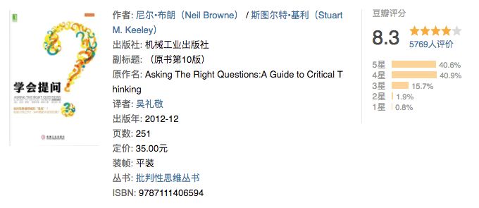

很少会把一本书看完，经常是看到一半就看不下去了。是书不好，还是人不好？花开堪折直须折，学习的年龄莫辜负大好青春。
学会提问：批判性思维指南

点评：学会思考，掌握思考的艺术。读完之后，生活中需要思考的地方不在小白。书中内容较多，需多深度阅读，深度思考，反复实践，才能融会贯通。
刻意练习：如何从新手到大师
费曼学习法：用输出倒逼输入
金字塔原理：思考、表达和解决问题的逻辑
如何阅读一本书
这样读书就够了

点评：拆书帮的经典之作，对于致用类图书的阅读有很大的启发作用。不过这种读书方法最好还是现场读书。对于一个人读书，这本书也告诉我们一个道理：学到就是赚到，不必强求掌握所有。
最优解人生
金钱心理学
把时间当作朋友
点评：李笑来的力作，对我影响很大的一本书，这本书是真正的提升了我个人的内驱力。似乎是忽然，我从曾经的懒散，变得自律。
深度思考 - 不断逼近问题的本质
点评：感觉书名取巧了，如果他要是写成某某某自传我是不会去看的。这本书可以让女性借鉴如何在职场上更进一步。但所谓的深度思考，逼近问题的本质缺少更加普遍的适应能力。
底层逻辑：看清这个世界的底牌
认知觉醒 : 开启自我改变的原动力
见识
Effective C++
重构：改善既有代码的设计
点评：一本程序员需要反复阅读的书，之前阅读过其中部分内容，这一次下定决心全部读完。受益匪浅，需要改进的地方还有很多。
面向对象分析与设计
Head First 设计模式
点评：一直没有系统的阅读过设计模式的书，这本书寓学于乐，读起来一点不枯燥。其可能的缺点在于不够聚焦，有点啰嗦，进而看了后面忘了前面。
代码大全
代码整洁之道
修改代码的艺术
测试驱动开发
C++ 程序设计实践与技巧：测试驱动开发
敏捷软件开发：原则、模式与实践
软件测试的艺术
Google软件测试之道
分布式服务框架原理与实践

点评：之前一直做基础开发，对于架构方面了解很少，这本书算是我架构的启蒙书籍。虽然目前的开发中还没有应用到相关知识，相信后续一定有所帮助。
大型网站技术架构

点评：按照高并发、高可用、可扩展等多个维度娓娓道来，从整体出发介绍了方方面面，对入门分布式相关架构知识很有帮助。主要问题在于，过于泛，要想掌握还需要针对每个内容点，重新寻找更深入的学习资料深入研究。
股票大作手回忆录
有知有行投资第一课
穷爸爸富爸爸

点评：给自己多一条出路，能够从容的面对程序员的中年危机。印象最深刻的是：工作不为钱，而为学习某项技能，学习最终产生价值。
戴维斯王朝
邻家的百万富翁
一个投资家的二十年

点评：虽然无法完全借鉴，但是书中确是有不说真知灼见。重要是学习与参与，然后在实践中检验成果。不一定在股票上，在技术等其他方面，也是能够有一点的借鉴。
韭菜的自我修养
点评：大鱼吃小鱼，小鱼吃虾米。知识+谋略+坚持，韭菜也有春天。这本书看样子像是李笑来的辩解，不过还是挺有道理的。
高效能人士的七个习惯
点评：一本常读常新的书，以前对成功学嗤之以鼻，从这本书后对其有了改观。这本书也反映了我阅读方面的一个问题——读了就忘。因此，我自己开始从宏观的角度来记录所读所思。
成就
这就是OKR
理念制度人：华为组织与文化的底层逻辑
从偶然到必然：华为研发投资与管理实践
技术领导力：程序员如何才能带团队
极客时间：技术管理实战36讲
微习惯
点评：此类书籍看了很多，就是为何对我不起作用。书中作者都说看得人都感同身受，觉得起了很大的改变。但我觉得这似乎是故意对自己的欺骗，可是我无法欺骗自己。
怪诞心理学

点评：并不觉得有多怪诞，只是比较有意思，关注的是一些平时不会关心的地方。按照我们平民百姓的说法，就是吃饱着撑了瞎想。不过还是挺有意思的。
养育男孩
何以为父
全球通史
人类简史
货币战争

中国近代史：1840-1937
乔布斯传
马斯克传
俞敏洪传：我曾走在崩溃的边缘
雷军传
巴菲特传
浪潮之巅

点评：讲述高新科技成败历史的书籍，从本书能够看出一家百年企业应该必须的元素，以及优秀的领导人的重要性。基因决定命运。
腾讯传

点评：腾讯的历史，是中国互联网二十年的历史。书中可以看出商场就是战场，没有永恒的敌人，也没有永远的朋友。再大的公司也可能在危机面前瞬间坍塌。
激荡三十年：中国企业1978-2008
三体

点评：除了早期沉迷的网络小说，三体是我今年来最投入的一本书。不光光是科幻，书中对人性的思考更让人深思。
禅与摩托车维修艺

点评：因为对摩托车感兴趣而看这本书，尚未看完，也不确定以后会不会看完。当作者开始反复的想出去阐述良质这个概念的时候，我开始对其丧失了兴趣。有可能现在的觉悟不够。
基督山伯爵

点评：只看了一半，喜欢看简练的文章，这种名著总是让我感觉冗余过度。前半部分看的觉得还算紧凑，后半部分就如裹脚布一样长了。三个火枪手也是只看了前半部分，看样子和大仲马无缘。